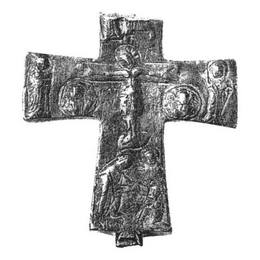

Catalog › CE-0233 · KOR2003-I.1.17
Valvă de față de encolpion cu Răstignire, medalioane cu arhangheli și compoziție de tip Coborârea la iad
sec. XI–XII (1001–1200) · loc necunoscut · Muzeul Național de Istorie al Ucrainei, Kiev, inv. В-4626/258
single valve of a reliquary cross, aramă; c. XI–XII (1001–1200); find spot unknown; kept at Muzeul Național de Istorie al Ucrainei, Kiev.


Identificare
- Categorie
- Valvă izolată
- Material
- Aramă
- Tehnică
- Turnare în relief; Gravare (incizie)
- Stare
- Fragmentară
- Dimensiuni
- Î 87 × L 87 × Gr 10 mm
Iconografie
- Avers
- Răstignirea (Hristos cu perizoma); Sf. Ioan; Neidentificat
- Descriere avers
- Valvă de față de encolpion cu capete drepte, ușor lărgite, fragmentată (parțial rupte capătul de sus și balamaua de jos). Compoziție cu mai multe figuri executată în relief jos și moale, pe alocuri completată cu linii adâncite pe conturul figurilor, medalioanelor și nimburilor. În interior valva este foarte adâncă, cu margini clare; pe pereții laterali ai valvei sunt urme de vopsea roșie și galbenă (?). În centrul crucii Răstignirea; cu linii adâncite sunt evidențiate lemnul crucii, suppedaneum și tăbliță. Hristos este reprezentat cu capul înclinat, brațele aproape drepte (stigmate pe mâini și picioare), într-o perizoma lungă până la genunchi. În medalioane rotunde sub mâinile lui Hristos două imagini bust de sfinți, evident arhangheli judecând după aripi. Pe capetele laterale, la marginea valvei, două figurine în picioare, probabil adstanții Maica Domnului și Sf. Ioan Evanghelistul. Pe capătul de jos o compoziție cu trei figuri, un fel de variantă prescurtată a „Coborârii la iad”: Hristos (la stânga) în plecare întinde mâna unui om reprezentat în colțul din dreapta jos (ca și cum ar fi în genunchi), care se întinde spre Mântuitorul; în spatele acestei figurine, mai sus, se vede încă o figurină de sfânt (ambele cu nimburi), întoarsă tot spre Hristos. Inscripții adâncite neclare: deasupra umărului stâng al lui Hristos – XC, sub mâna dreaptă – [HAT/OV], sub cea stângă – [PHO/CHC], în partea cea mai de jos a valvei – [НЛСНН].
- Inscripții
- XC; [HAT/OV]; [PHO/CHC]; [НЛСНН]
- Limba
- Greacă
Datare și atribuire
- Datare
- sec. XI–XII (1001–1200)
- Centru
- Necunoscut
- Tipologie
- Korzukhina–Peskova 2003, tip I 1
Descoperire
- Context
- Colecție (fără context)
Păstrare și referințe
- Colecție
- Muzeul Național de Istorie al Ucrainei, Kiev
- Nr. inventar
- В-4626/258
- Bibliografie
- G. F. Korzukhina, A. A. Peskova, Древнерусские энколпионы. Нагрудные кресты-реликварии XI–XIII вв., Sankt-Petersburg, 2003 [Korzukhina–Peskova 2003], p. 47, cat. nr. I 1/17, reprodusă la Табл. 5 (planșe, p. 247). Publicată și în A. A. Пескова, Л. В. Строкова, Христианские древности Византии в «Сирийской коллекции» Б. И. и В. Н. Ханенко, Sankt-Petersburg–Kiev, 2012 [Peskova, Strokova 2012], p. 142, cat. nr. 51, ilustrația (fotografie și desen) la aceeași pagină.
- Figura
- Табл. 5
- Planșe
- Korzukhina–Peskova 2003, Табл. 5 (planșă fără paginație proprie în PDF; p. 247 tipărită)
- Observații
- Datare după Peskova: sec. XI–XII. Dimensiuni: h 8,7 cm păstrați (fragment). Coordonate: nu sunt date în sursă.
Citare: Corpus Encolpiorum, CE-0233, Valvă de față de encolpion cu Răstignire, medalioane cu arhangheli și compoziție de tip Coborârea la iad, --root/piese/KOR2003-I.1.17/ (accesat 2026-10-20).